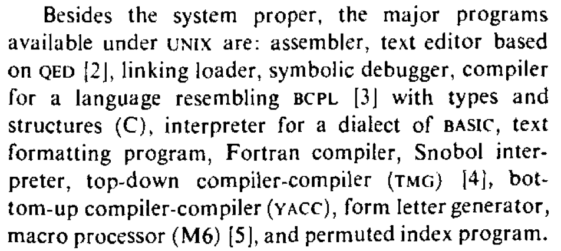

Overview
复习
- 应用视角的操作系统：对象 + API
- 把操作系统当提供服务的 “黑盒子”
本次课回答的问题
- Q: 如何理解 “操作系统就是 C 程序”？
本次课主要内容
- xv6 简介
- xv6 代码导读
xv6 简介
UNIX 传奇
一万行代码得到一个真正的、好用的操作系统
- The UNIX time sharing system (SOSP'73 and CACM'74)
- 免费授权给高校使用，它实在太适合教学了！

xv6: UNIX v6 的现代 “克隆”
接近完整的 UNIX Shell 体验
- 基本工具集 (wc, echo, cat, ...)
- 命令执行、管道、重定向
- 支持多处理器
- Now in RISC-V!

它真的是一个 “可用” 的操作系统！
- 时间回到 1970s
- 这些系统调用就足够支撑刚才提到的应用
- cc, as, ld, vi, sed, awk, troff, lp, ...
xv6 系统实现
这是一份包含了很多 Good Practice 的代码
- 对初学者来说更像是一个 “艺术品”
- 从代码里吸取智慧
RTFM
- xv6: A simple, Unix-like teaching operating system
宝藏手册 ，包含了所有细节和 “为什么要这么做”，推荐阅读
RTFSC
- xv6-riscv
- 会分几次课讲解
项目构建与运行
RTFSC: Makefile
- 相比 AbstractMachine (跨平台/体系结构) 容易很多
- 先找到构建目标
- 然后老规矩:
make -nB - 你可以根据需要修改一些配置
- 优化等级、CPU 数、编译指令等
- 然后老规矩:
复习：“程序的执行 (状态变化序列) 有时比代码 (状态机) 更容易理解”
- 可以用于配制 vscode
- Quick quiz: 如何自动生成
compile_commands.json?
- Quick quiz: 如何自动生成
xv6 中的进程
xv6 进程的地址空间

回顾：进程 = 运行的状态机 (user/)
- gcc/ld 创建：代码、数据
- 参考 ldscript
- 运行时分配：堆栈
- 包含 exec 的参数
- 例子：
init.c和sh.c(sh-xv6.c 的真身)
MAXVA 处有两个神奇的页面
- Trampoline 和 trapframe
- 由操作系统分配，用户进程无权访问
调试用户代码
试一试 init 进程
proc.c中包含一段 initcode- 我们可以调试它！(
b *0) - 系统调用实现：编号放入 a7 寄存器，执行 ecall 指令
- man 2 syscall
- 我们可以调试它！(
- 然后再调试
_initadd-symbol-file user/_init加载调试信息
使用 QEMU
- 查看地址空间
info mem - 对照手册，查看寄存器，例如
p/x $stvec- 可以打上断点 (
b *$stvec)
- 可以打上断点 (
xv6 系统调用
xv6 系统调用
RISC-V user-level ecall 指令
- 关闭中断
- 复制 \$pc 到 \$sepc
- 设置 \$sstatus 为 S-mode
- 设置 \$scause 为 trap 的原因 (ecall, 8)
- 跳转到 $stvec (\$pc = \$stvec)
在 xv6 中
- Trampoline: $stvec = 0x3ffffff000 (只读)
- Trapframe (0x3fffffe000): 保存进程寄存器现场的内存
Trampoline (跳板)
trampoline.S (汇编代码)
- 对 ecall 瞬间的状态做快照
填充 struct trapframe(proc.h) - 利用 \$sscratch (S-mode scratch) 保存所有寄存器
- 切换到内核栈 (相当于切换到进程对应的 “内核线程”, L2)
- 切换到内核地址空间
- 修改 \$satp (S-mode address translation and protection)
- sfence.vma
- 跳转到
tf->kernel_trap- 痛苦时间解除，进入 C 代码
系统调用处理
struct proc *p = myproc()
- 我们可以在 gdb 中查看 “进程” 在操作系统内的数据结构表示
p/x *p- 可以看到 trapframe 的地址 (和地址空间中映射的完全一样)
p/x *p->trapframe(a7 = 0x7)
- 检查
scause == 8(syscall)- \$epc += 4 (更正返回地址)
- 打开中断
- 执行系统调用
usertrapret()返回- ecall 的逆操作